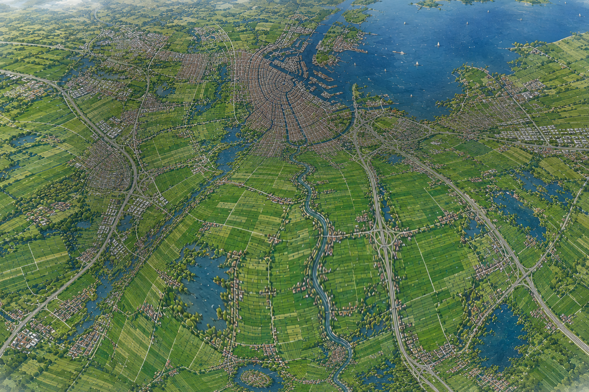
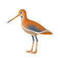

 
        <div class="marker-met-uitleg">
            <h1>Klik op mij en ontdek de weidevogelgebieden!</h1>
            
            
        </div>

        <div class="marker-met-uitleg">
            <h1>Klik op mij en ontdek het verhaal van de boeren!</h1>
            
            
        </div>
        
        
        
        
        
        
        
        
        
        
        
        
        
        
        
        
        
        